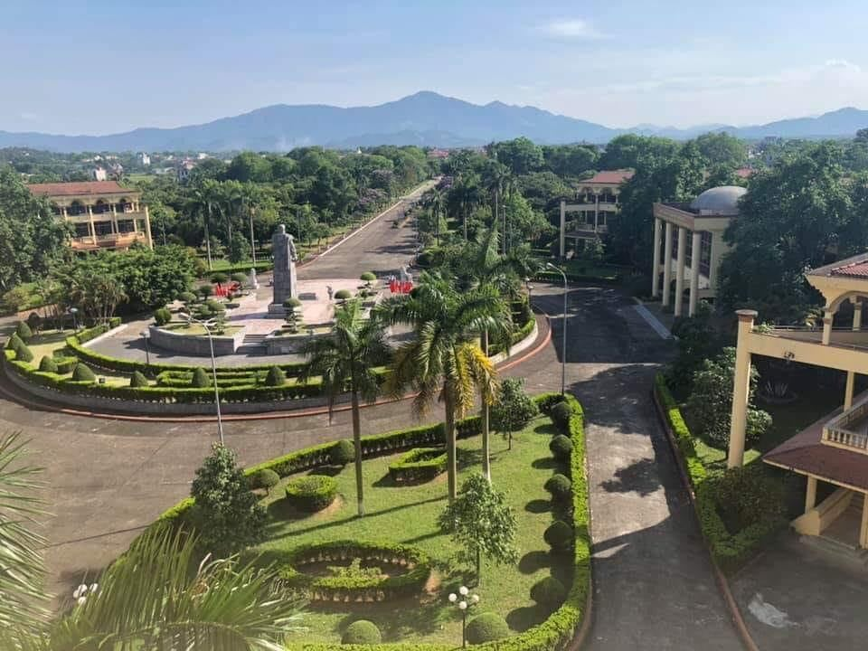

ADMIN
PROFILE
Hello everybody
I'm c. I'm 21 year old. I come from Bac Ninh province, Luong Tai distric, dT vilage.
Righnow, I'm study at Tran Quoc Tuan University. I want introduce about my school.
Tran Quoc Tuan University or Army Officer School 1 is the primary school for commanding officers in the north of Vietnam, under the Ministry of National Defense of Vietnam, the first school in the military school system. to train tactical army officers at the division level (platoon, company, battalion) with bachelor's degrees in military science (university and college) in the specialties: infantry, motorized infantry, reconnaissance army.
The university was recognized by the Vietnamese Ministry of Education and Training and allowed training of a bachelor's degree in military training in 1998. All officers of the People's Army of Vietnam (from Quang Tri to the North) have At least 6 months of training at school.

This is history begin:
Tran Quoc Tuan University was originally called the Main Army of the Japanese Resistance, established on April 15, 1945.[1]On September 7, 1945, the school was renamed the Vietnam Main Military School.
On October 15, 1945, the school was renamed the Vietnam Cadres Training School.
On April 15, 1946, the school was renamed Truong Vo by Tran Quoc Tuan, and started the first course in Son Tay town with the goal of training middle-level commanders and companies with basic knowledge. on the military to prepare for the Indochina war.
In February 1948, the school was renamed Tran Quoc Tuan High School Army School.
In December 1950, the school was renamed the Vietnam Army School.
In January 1956, the school was renamed the Army Officer School.
In 1976, the school was renamed the First Army Officer School.
On October 28, 2010, the school was renamed Tran Quoc Tuan University. [2]
This is a list training cource:
- Department of Strategy
- Faculty of Party Affairs, Political Work
- General Military Faculty
- Department of Military Services
- Department of Military Services
Principal through periods
| Name | position |
|---|---|
| Hoàng Văn Thái | General |
| Trần Tử Bình | Brigadier |
| Lê Trọng Tấn | Brigadier |